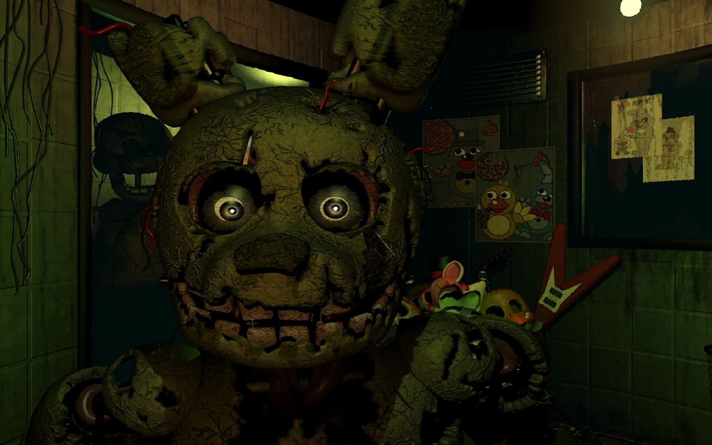

Springtrap

Springtrap is a central character in "Five Nights at Freddy's 3" and is one of the primary antagonists in the game. Here's a description of Springtrap:
Appearance: Springtrap is the decayed and gruesome animatronic version of Spring Bonnie, a character from the earlier days of Freddy Fazbear's Pizza. Unlike the previous animatronics in the series, Springtrap is not brightly colored or kid-friendly. Instead, he is a withered, sinister-looking rabbit animatronic. His body is noticeably damaged and deteriorated, with exposed wires, tattered fur, and a generally menacing presence. What makes Springtrap particularly terrifying is that his appearance hints at a horrifying past, and he carries a sense of dread and malevolence.
Origin: Springtrap's true identity is that of William Afton, the co-founder of Freddy Fazbear's Pizza and the Purple Guy, who was responsible for the murders of several children. He used the Spring Bonnie suit to carry out these crimes and ultimately met his fate when he was spring-locked inside the animatronic suit, leading to his transformation into Springtrap. He is believed to be the embodiment of the dark secrets and tragedies of the Fazbear franchise.
Behavior: In "Five Nights at Freddy's 3," Springtrap is the main animatronic threat. He roams the dark and decaying Fazbear's Fright horror attraction, actively hunting the player. Springtrap's behavior is unpredictable, making him a formidable adversary. Players must use security cameras, audio cues, and ventilation systems to track his movements and try to survive until the end of their shift.
Springtrap's character and design contribute to the chilling atmosphere of "Five Nights at Freddy's 3" and play a crucial role in advancing the game's lore, shedding light on the dark history of Freddy Fazbear's Pizza and the tragic fate of its co-founder.
Phantoms Animatronics

The Phantom Animatronics are a group of antagonists that appear in "Five Nights at Freddy's 3." Unlike the physical animatronics, these phantoms are hallucinations and are not physically present in the game's environment. Here's a description of each Phantom Animatronic:
Phantom Freddy: Phantom Freddy is a phantom version of the original Freddy Fazbear. He has a burnt and tattered appearance, with a missing ear and damaged jaw. Phantom Freddy often appears in the office, blocking the player's view temporarily and impairing their vision.
Phantom Chica: Phantom Chica is a phantom counterpart of the original Chica the Chicken animatronic. She appears to be severely burned and damaged, with a missing lower jaw. Phantom Chica can jump-scare the player when they bring up the camera.
Phantom Foxy: Phantom Foxy is a phantom representation of the original Foxy the Pirate Fox. He appears with a melted and distorted appearance, missing an arm and an eye. Phantom Foxy often lunges at the player when the camera is lowered.
Phantom Balloon Boy (Phantom BB): Phantom BB is a phantom version of Balloon Boy, known for his unsettling grin. He can appear in the player's office, causing audio and ventilation errors when spotted.
Phantom Puppet (Phantom Marionette): The Phantom Puppet is a ghostly, phantom version of the Puppet. It has a charred and eerie appearance with glowing white eyes. The Phantom Puppet can suddenly appear on the player's screen, obstructing their view and causing panic.
Behavior: The Phantom Animatronics are not physically dangerous to the player but instead create distractions and impair the player's ability to survive against Springtrap. They typically appear when the player uses the camera system or in certain specific circumstances, such as looking at the monitor for extended periods. When they appear, they can disrupt gameplay by causing visual and audio disturbances, making it more challenging to monitor Springtrap's movements.
The Phantom Animatronics add an extra layer of tension and fear to "Five Nights at Freddy's 3" by making the player question what is real and what is a hallucination, contributing to the game's overall atmosphere of dread and unease.